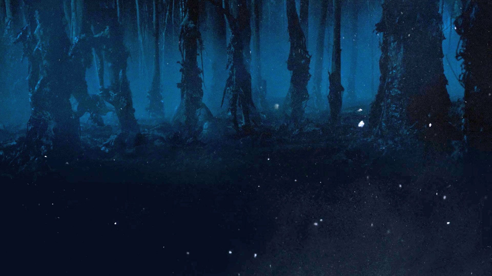

Это паралелльный мир, который очень похож на наш, там те же здания и инфраструктура. Но Изнанка гораздо темнее, холоднее, и практически везде заполнена туманом. Люди на обратной стороне не живут, там обитают различные существа, среди которых демогоргоны и змееобразные отростки, а биологические мембраны, лозы и лианы покрывают все поверхности. Монстры с Изнанки способны проникать в наш мир и распространять свои споры.
Название «Обратная сторона» появилось после того, как Одиннадцать в компании Майка, Лукаса и Дастина перевернула обратной стороной настольную игру Dungeons & Dragons и поставила в центр фигурку демогоргона. Так девочка, лексикон которой ограничивался словами «да, папа», смогла объяснить, что пропавший Уилл находится в обратном измерении.
Вообще 12-летние поклонники фэнтези и научной фантастики смогли понять природу Обратной стороны быстрее и глубже, чем лабораторные ученые. Уилл, попавший туда самым первым, описывал ее маме так: «Тут как дома, но темно и холодно». Дастин Хендерсон, подслушавший этот разговор, сразу провел параллель с Долиной теней из книг астрофизика и популяризатора науки Карла Сагана («Долина теней — это измерение, являющееся темным отражением или эхом нашего мира. Сдвинутая грань, логово чудовищ»). Сравнение с Долиной теней натолкнуло юных гиков на мысли о параллельном измерении — вопросы о его природе они задали ведущему школьного радиокружка мистеру Кларку.
Кларк решил, что ребята заинтересовались многомировой теорией американского физика Хью Эверетта — в 1957 году ученый выдвинул гипотезу о существовании альтернативных вселенных — «прямо как наши, но в бесконечных вариациях». Кларк подсказал ребятам, что «чисто теоретически» в параллельное измерение можно попасть при помощи мощного потока энергии. Он объяснил теорию наглядно, нарисовав на одноразовой бумажной тарелке рисунок: по канату (грань между вселенными) идут акробат и блоха, и блоха в отличие от человека не ограничена в движениях. Чтобы попасть в параллельное измерение, нужно открыть некий портал — в качестве иллюстрации взрыва учитель проткнул тарелку ручкой.